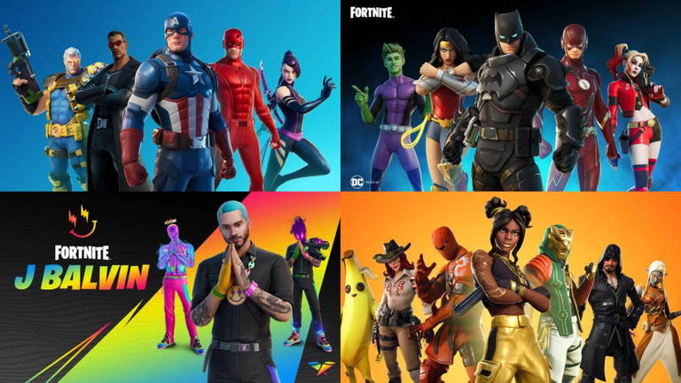

Fortnite es conocido por su gran variedad de personajes y skins, que han evolucionado a lo largo de las temporadas. Fortnite sigue una trama en su historia, que va de viajes en el tiempo, peleas, conspiraciones y aventuras, para así seguir la temática de la temporada cada 3 meses. Entre los personajes principales de la trama y los más icónicos se encuentran:
Fortnite ha introducido personajes de otras franquicias, como Spider-Man, Naruto y Darth Vader, entre otros videojuegos, artistas, cantantes, películas, etc. Gracias a sus colaboraciones con grandes marcas de entretenimiento, Fortnite ha llegado a más audiencias y ha crecido exponencialmente a lo largo de los años, convirtiéndose en uno de los juegos más importantes de la última década.
A lo largo de los años, Fortnite ha lanzado skins extremadamente raras y exclusivas que solo unos pocos jugadores han conseguido. Algunas de estas skins han sido obtenibles a través de eventos especiales, colaboraciones limitadas o como recompensas por la compra de dispositivos específicos. Aquí algunas de las más exclusivas: